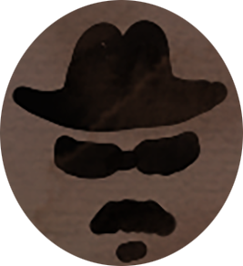

Garbo decided to volunteer as a spy.
He is interviewed by government official in the British embassy.
However...
He was declined.
 Garbo called the german embassy.
Garbo called the german embassy.
The voice on the line, Fredrico, tells him to show up the following day at a cafe shop at 4:30.
shows up at 4:30 as intructed.
Garbo declares that he wants to be a spy for the Axis. Fed ask garbo what are his reasons.
Garbo had to explain why he can be a perfect spy.
He lies:
My whole family back in Spain is passionate about Facism.
I have an English passport!
Garbo decided to volunteer as a spy.
He is interviewed by government official in the British embassy.
However...
He was declined.

choice 1.choice 1.choice 1.choice 1.choice 1.choice 1.
choice 2.choice 2.choice 2.choice 2.choice 2.choice 2.
choice 3.choice 3.choice 3.choice 3.choice 3.choice 3.choice 3.